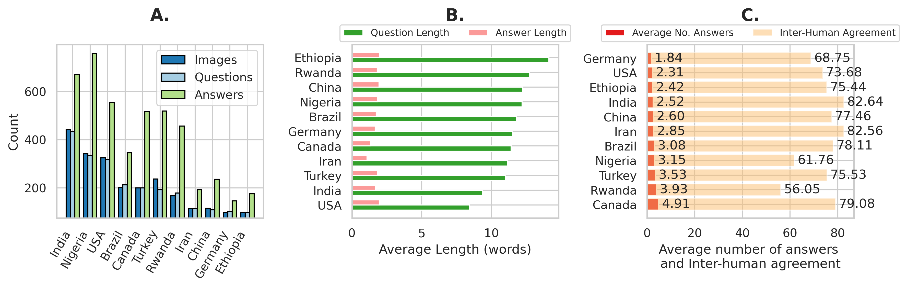

Samples from CulturalVQA. Our dataset is comprised of images presenting cultural concepts from 11 countries across five facets: traditions, rituals, food, drink, and clothing. It further includes questions probing cultural understanding of the concepts presented in the images and answers to these questions.
Abstract
Foundation models and vision-language pre-training have notably advanced Vision Language Models (VLMs), enabling multimodal processing of visual and linguistic data. However, their performance has been typically assessed on general scene understanding - recognizing objects, attributes, and actions - rather than cultural comprehension.
This study introduces CulturalVQA, a visual question-answering benchmark aimed at assessing VLM's geo-diverse cultural understanding. We curate a diverse collection of 2378 image - question pairs with 1-5 answers per question representing cultures from 11 countries across 5 continents. The questions probe understanding of various facets of culture such as clothing, food, drinks, rituals, and traditions.
Benchmarking VLMs on CulturalVQA, including GPT-4V and Gemini, reveals disparity in their level of cultural understanding across regions, with strong cultural understanding capabilities for North America while significantly weaker capabilities for Africa. We observe disparity in their performance across cultural facets too, with clothing, rituals, and traditions seeing higher performances than food and drink.
These disparities help us identify areas where VLMs lack cultural understanding and demonstrate the potential of CulturalVQA as a comprehensive evaluation set for gauging VLM progress in understanding diverse cultures.
Dataset analysis
Images, Question and Answer: Our dataset comprises of 2328 unique images. We collected 2378 questions in total from 11 countries asking the local annotators to create questions for images from their culture such that it is easy for the locals to answer but challenging for outsiders. We present the number of unique questions per country (below). Our dataset consists of 7206 manually curated answers in total (each question has 1-5 answers).

Comparative analysis of data by country. The figure presents three aspects: (A) unique counts of images, questions, and answers, (B) average lengths of questions and answers, and (C) average number of answers and inter-annotator agreement scores across countries, showcasing variations and trends in CulturalVQA.
Cultural concepts: According to the pie chart in the figure below, food-related questions are most prevalent, accounting for 31.6% of the dataset, followed closely by traditions and rituals, which represent 28.6% and 22.6% respectively. Thus, roughly 50% of the questions in our dataset probe for cultural understanding of the intangible aspects of culture (rituals and traditions)! The word clouds generated from the collected answers reveal diverse expressions of rituals and traditions represented by terms like hamam (Turkey) and meskel (Ethiopia). Further, the food category includes diverse items such as feijoada (Brazil), fufu (Nigeria), and vada (India) indicating a geo-diverse culinary scope. While the clothing category is the least prevalent in the dataset, it shows the highest variety in terms of collected answers.
Word clouds representing the answers in CulturalVQA across five facets of culture: clothing, drink, food, rituals, and traditions. In the bottom right, a breakdown of cultural facets in data is depicted.
Benchmarking
Degree of visual understanding required
Our evaluations with GPT-4 show that while adding country and, visual contexts in the form of google lens entities improves accuracy, they still fall short compared to the full vision-language model (VLM) that integrates detailed visual information. This confirms that accurate answers require a substantial degree of visual comprehension.
Baseline evaluation of the degree of visual understanding required in CulturalVQA: LLM-only, LLM with a country-specific context, LLM with Google Lens entities, and GPT-4V.
Open-source and closed-source models
We report the LAVE scores of open-source and closed-source vision-language models on the proposed CulturalVQA benchmark, which range across countries from 43% to 72% for GPT-4, the best-performing model. Notably, there's a considerable performance gap between closed-source models and the best open-source models. This gap is striking in African-Islamic cultures (Ethiopia, Nigeria, Iran, and Turkey), with a 29.7% gap for Ethiopia, where models struggle the most.
LAVE accuracies of open- and closed-source models on CulturalVQA. Best-performing results per country are highlighted in green, and best-performing results among open-source models are highlighted in blue.
Performance across facets
We report the model performance across 5 cultural facets: food, drinks, clothing, rituals and traditions. Generally, we find that proprietary models tend to perform better on intangible concepts - rituals, and traditions, compared to drink and food. Indeed, the highest performance of GPT-4 is achieved in the rituals facet (>60%), whereas in the clothing facet, it achieves a lower performance of ~ 53%
VLM performance across facets as measured using LAVE accuracies.
Human vs. AI Performance on CulturalVQA
In our evaluation using the LAVE metric on 1,455 questions, humans familiar with the specific cultures achieved accuracy between 55% and 85%, with countries like Iran seeing scores over 80%. However, a significant gap was observed when comparing these results to AI performance using GPT-4, particularly in non-Western countries such as Iran, Nigeria, India, Turkey, and Ethiopia, where the discrepancy exceeded 10%. This highlights the AI's stronger grasp of Western cultural concepts due to their more prevalent representation in its training data.
Performance gap between the best open-source and closed-source models compared to human performance. Negative values indicate where models underperform relative to humans.
Qualitative Analysis of GPT-4
Qualitative failure examples of GPT-4 predictions.
Our qualitative evaluation of the best-performing model, GPT-4, highlights its limitations in recognizing and interpreting cultural nuances. For instance, GPT-4 overlooks the cultural significance of intangible cultural concepts like coral beads in Nigeria, which symbolize wealth and heritage but are treated merely as decorative objects, as well as it fails to recognize the symbolic connection between cows and planet Earth in Indian culture (see figure above).
Focusing on tangible cultural concepts, the model's shortcomings are evident as it inaccurately recognizes cultural entities and objects. For instance, it mislabels Naghali, a traditional Iranian storyteller as a Dervish and mistakes a traditional Turkish tea glass for a tulip glass, commonly used for serving beer. These examples reveal how GPT-4 struggles with both tangible and intangible cultural concepts: it has difficulties distinguishing between visually similar but culturally distinct entities and objects, and it lacks a deep understanding of cultural beliefs and symbolic meanings.
Citation
If you found this work useful in your own research, please consider citing the following:
@misc{nayak2024benchmarkingvisionlanguagemodels,
title={Benchmarking Vision Language Models for Cultural Understanding},
author={Shravan Nayak and Kanishk Jain and Rabiul Awal and Siva Reddy and Sjoerd van Steenkiste and Lisa Anne Hendricks and Karolina Stańczak and Aishwarya Agrawal},
year={2024},
eprint={2407.10920},
archivePrefix={arXiv},
primaryClass={cs.CV},
url={https://arxiv.org/abs/2407.10920},
}